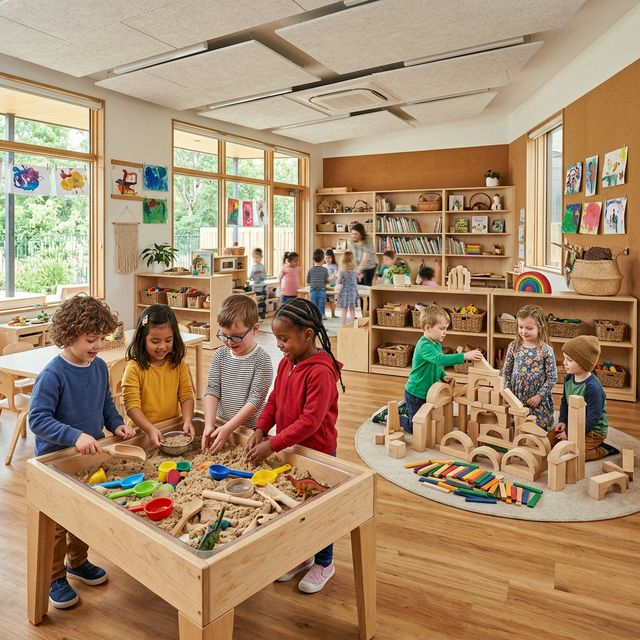

Picture this: It's 9:30 AM at The Nurturing Roots, and instead of rows of toddlers sitting quietly at desks, you see a beautiful buzz of activity. Three children are building a tower with blocks, debating whether it needs to be taller or wider. Two are at the water table, experimenting with floating and sinking. Another group is in the reading corner, one child "reading" to the others by making up a story from the pictures.
This isn't chaos—it's horizontal learning in action.
If you're a parent searching for the best preschool in Nerul or Navi Mumbai, you've probably come across different teaching philosophies. Today, we're breaking down what horizontal learning means, why it's revolutionizing early childhood education, and how we implement it at The Nurturing Roots to help your child reach their full potential.
The Heart of Discovery
Horizontal learning is an educational approach where children learn through collaboration, exploration, and self-directed discovery rather than through traditional teacher-led instruction.
Think of it this way:
- Vertical Learning (Traditional): Knowledge flows from teacher → student. Everyone learns the same thing at the same pace. Think of a funnel—information poured from top to bottom.
- Horizontal Learning: Knowledge flows between peers, from experience, and through exploration. Each child moves at their own pace. Think of a garden—every plant grows differently, but all thrive in the right environment.
Why It Works for Young Minds
- 1. Active Exploration: Children aren't passive recipients of information—they're scientists. When a child pours water from one cup to another 47 times, they're understanding volume and cause/effect.
- 2. Social Interaction: Peer learning is incredibly powerful. A four-year-old showing a three-year-old how to zip their jacket is learning leadership and empathy while the younger child masters a life skill.
- 3. Individual Pacing: Horizontal learning allows both fast and steady learners to thrive without labeling anyone as "slow" or "advanced." Every child achieves competence—just on their own schedule.
At our centers in Nerul, Pune, and Ulwe, we weave horizontal learning into everything we do, from project-based explorations to mixed-age groupings that mirror real-world community dynamics.
Experience it yourself!
Your child deserves an education that honors their curiosity and respects their timeline.
Call us at +91-7838587500